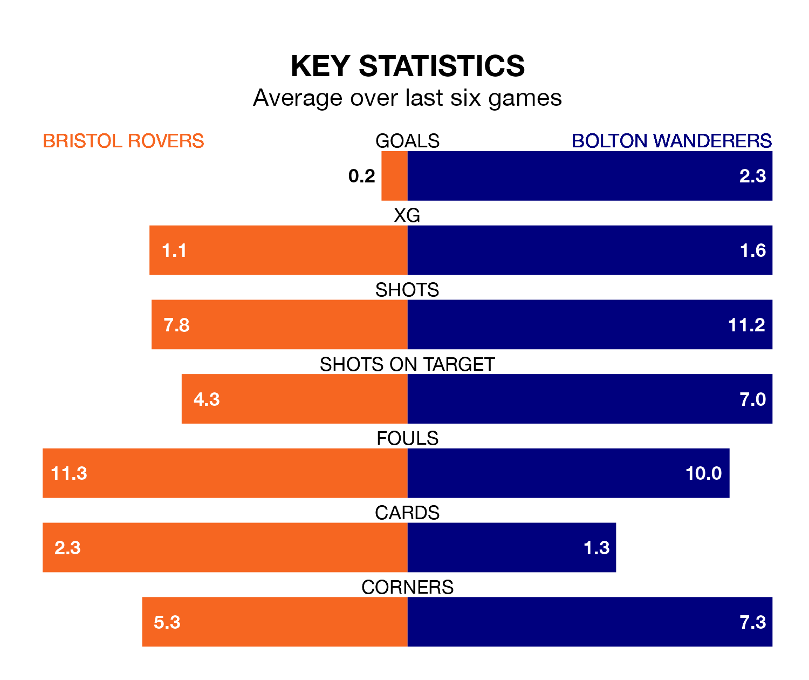

Bolton Wanderers are strong favourites to take all three points despite Bristol Rovers' home advantage in Saturday's match at the Memorial Stadium.
*Betting Company* are offering odds of 1.8 on Bolton sealing the win, with the visitors sitting third in EFL League One table.
Rovers, who are 15th in the league and 27 points behind Bolton, are priced at 3.7 to win. A draw is set at 3.65.
With 76 goals in 41 games so far this season, Bolton are the league's second-highest scorers with 1.9 goals per game. And they are conceding fewer than average, letting in 45 goals at a rate of 1.1 per game.
Rovers, meanwhile, are below average scorers, with 1.2 goals per game, compared to a league average of 1.3. They have conceded 1.5 goals per game.
In the last 10 years, Rovers and Bolton have played each other on seven occasions. Rovers won one of them, Bolton three, and they drew three times.
On average, the Gas scored 1.1 goals and Bolton 1.6 in those matches.
Their last meeting was on December 16, when Rovers won 2-1 away.
The Gas are in disappointing form in EFL League One, with one win and two draws from their last six games.
With two wins and three draws over that period, Wanderers' form is better – they have taken nine points from 18, compared to the home side's five.
In Chris Martin, Rovers have one of the league's sharpest shooters so far this season. He has notched 15 goals in 30 appearances, to sit fifth in the scoring charts.
His goal rate of one every 149 minutes is quicker than that of Dion Charles, the visitors' top scorer with a goal every 173 minutes, and a total of 13 goals in 29 games.
Rovers' last match was on Monday, a 0-0 draw against Shrewsbury Town.
Bolton beat Reading 5-2 last time out, also on Monday, with Aaron Collins (three) and Jón Daði Böðvarsson (two) on the scoresheet.
Saturday's match will be refereed by Carl Brook, who has taken charge of 14 EFL League One games so far this season, issuing one red card and booking 63 players. He has awarded six penalties.
The last Rovers game Brook refereed was a 2-1 away win against Bolton Wanderers on December 16. His last Bolton match was their 2-1 loss at home against Bristol Rovers on December 16.
Updated: 16:41 (UTC), 04/04/24